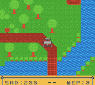
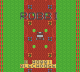
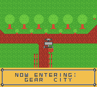

GameBoy Color Game “Robbi”
“Robbi” is a game I’ve been working on for a while now. It’s written in raw assembly for the GameBoy Color. Though it’s currently running on an emulator for easy development, it would run on real hardware as well.
Right now, there isn’t much in terms of content as I’m still creating the basic systems. However, a few basics are done: \
You can walk (or rather drive) around the map, which has a maximum size of 128x128 tiles. Collisions are also in. \
Water is animated already too:

I’ve also put in a title screen with a small scrolling animation:

The game has support for multiple maps, although there is only one at the moment. Here’s the starter village for example:
I’m working on implementing map switching at the moment, which would also allow you to enter buildings. Luckily, part of the system, namely the detection for the doors,
is already done. The detection is actually part of the system to read signs and checks what tiles the player is looking at. Due to the fact that the map data directly holds the tile types,
this is rather easy to do.\
Both systems then check a table of positions and see if a match is found. \
As a bonus, here’s a screenshot of the player reading a sign:

Right now, that’s about it for this game. I’ve got a lot more planned, including NPCs, enemies and even a combat system. In addition to that, the player will be able to upgrade the robot to improve their stats.